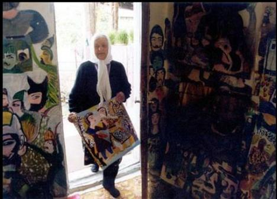

پذيرش > سایت نوشته ها > مکرمه قنبري زني که زياد مي دانست


 مکرمه قنبري زني که زياد مي دانست مکرمه قنبري زني که زياد مي دانست
2 شهریور 1390 - - نسخه قابل چاپ
مکرمه قنبري يا همان ننه مکرمه، نقاشي بود که در سال 1307 در شهر بابل به دنيا آمد و اگرچه سواد خواندن و نوشتن نداشت اما از سر ذوق هنري اش، تبديل به يک چهره جهاني نقاشي پست مدرن شد و جايزه بانوي سال نقاش در سال 2001 را توسط دوازدهمين کنفرانس ايرانشناسي در دانشگاه دولتي سوئد دريافت کرد.
مکرمه که تا سن 67 سالگي تصميمي براي نقاشي کردن نداشت، در 10 سالگي به عنوان همسر چهارم مردي ميانسال ازدواج کرد و صاحب 9 فرزند شد. او در تمام عمرش به خياط، آرايشگر، ماما و طبيب محل مشغول کار بود تا اين که يک حادثه شوق نقاشي را در او بيدار کرد. او گاو محبوبي داشت که براي چراندنش مجبور بود روزانه مسافتي طولاني را طي کند. يک روز که مکرمه بيمار شد، فرزندانش از نگراني وضعيت مادر، بدون اطلاع او گاو را فروختند اما مکرمه به محض اطلاع از اين کار، به شدت افسرده شد و براي بروز احساساتش شروع به نقاشي کرد.
اولين کار ننه مکرمه، پرتره اي از يک گاو بود که با گل و خاک روي سنگ نقاشي شده بود. او سپس تمام ديوارهاي خانه، درها، کدوهاي حلوايي و هر چه را که پيدا مي کرد طرح مي زد تا زماني که يکي از پسرانش که ماهانه براي ملاقات مادر از تهران روانه روستاي دريکنده مي شد براي او رنگ و کاغذ خريد و از آن روز مکرمه تا لحظه مرگ نقاشي کشيد.
روي ديوار خانه، روي وسايل آشپزخانه، روي در، روي زمين… مکرمه کم کم شروع به نقاشي داستان هاي ديني کرد و در خلال آنها خاطرات خود را هم به تصوير مي کشيد. بعد از فوت مکرمه قنبري در روز 2آبان 1384 خانه او به عنوان موزه مورد بهره برداري قرار گرفت.
کمپاني فاکس امتياز ساخت فيلم از زندگي مکرمه قنبري، نقاش ايراني را خريداري کرد. مريل استريپ نقش مکرمه را بازي مي کند.
اميرعلي بلبلي، مدرس موسيقي و فرزند قنبري با تاييد اين خبر و بنا بر آخرين مکاتبه با مسئولان كمپاني فاكس گفت:«در حال حاضر داستان زندگي مادر جمع آوري شده و يکي از هنرمندان مطرح هاليوود در حال نوشتن سناريو است. اين فيلم قرار است به کارگرداني اسي نيک نژاد، هنرمند ايراني الاصل ساخته شود. مسئولان کمپاني تمايل دارند در صورت صدور مجوز از سوي وزارت فرهنگ و ارشاد اسلامي، فيلمبرداري را در روستاي دريکنده آغاز کنند. در غير اينصورت آنها مجبورند فيلم را با بازسازي صحنه ها در هاليوود بسازند.»
طبق آخرين نامه رسيده از کمپاني فاکس، مريل استريپ بازي در اين نقش را پذيرفته و در صورتيکه اتفاق غير منتظره اي رخ ندهد، نقش به او واگذار مي شود.
مسئولان فاکس، به هنگام برپايي نمايشگاهي از آثار مرحوم قنبري در لس آنجلس، با او آشنا شدند و همان زمان درخواست خود براي خريداري امتياز ساخت فيلم از زندگي اين هنرمند را اعلام کردند. اوايل بهار، پيش از مرگ اين هنرمند با امضاي قرارداد، امتياز ساخت فيلم به کمپاني امريکايي واگذار شد.
كمپاني يادشده پيش از اين اعلام كرده بود اطلاع رساني درباره اين طرح را خود به عهده مي گيرد. بنابر نامه دريافت شده انتشار اين خبر در نشريات امريكايي، با استقبال زياد محافل هنري روبه رو شده است.
مکرمه قنبري سال 1307 در روستاي دريکنده استان مازندران به دنيا آمد. جوشش دروني او براي خلق تصاوير از همان زمان کودکي، به صورت بازي با گل و خاک خود را آشکار مي ساخت اما او تا سن 67 سالگي براي بيان احساسات خود از طريق نقاشي فعاليتي نکرد. ميل هنري او از طريق ديگر کارهاي هنري به ويژه آرايش عروس هاي دهکده بروز مي يافت.
رو آوردن مکرمه به نقاشي از بيماري گاو مورد علاقه اشت آغاز شد. او گاو محبوبي داشت که براي چراندن آن مجبور بود روزانه مسافت طولاني اي را بپيمايد. پس از چندي مکرمه بيمار شد و فرزندانش که نگران سلامتي مادر بودند بدون اطلاع قبلي او حيوان را فروختند. پس از آن زمان مکرمه بسيار غمگين شد و براي غلبه بر احساساتش به نقاشي پناه برد. او که حتي قادر به خواندن و نوشتن نبود، بدون هيچ گونه آموزش رسمي دست به خلق تصاويري فوق العاده زد.
اولين کارش را که پرتره اي از يک گاو بود، با گل و خاک روي سنگ نقاشي کرد. سپس تمام ديوارهاي خانه، درها، کدوهاي حلوايي و هر آنچه را مي توانست به عنوان بوم نقاشي عمل کند، انباشته از طرح و رنگ کرد تا اينکه يکي از پسرانش در يکي از سفرهاي ماهانه براي ملاقات مادر، از تهران برايش رنگ و کاغذ خريد.
اکنون تمام خانه اش مملو از نقاشي هايي است که هر کدام راوي داستان تلخ و شيرين زندگي او به ويژه ماجراي ازدواجش به شمار مي آيند. مکرمه هميشه به اينکه که چرا او را مجبور کردند در سن پايين همسر چهارم مردي ميانسال شود، اعتراض مي کرد.
مکرمه در مصاحبه اي که با هالي، فيلمساز امريکايي انجام داد، درباره زندگي اش چنين گفت:«به مدت چهار سال تنها شب ها نقاشي مي کردم و هرگاه ميهمان ناخوانده اي سر مي رسيد به سرعت همه وسايلم را پنهان مي کردم زيرا ذهنيت آن ها چنين بود که کاغذ و رنگ و قلم به چه درد يک کشاورز مي خورد؟ من هميشه کاري براي انجام دادن دارم. در خانه هم کار مي کنم، هم نقاشي. هيچ گاه بيکار و بيهوده زندگي نکردم. حتي مانند ساير خانم ها، عادتي به خواب ظهر ندارم.»
نخستين نمايشگاه مکرمه در سال 1374 در گالري سيحون بر پا شد و پس از آن هر ساله نمايشگاه هايي را در همان گالري برگزار مي کرد. هم چنين در سال 1384 نمايشگاهي از آثارش در لس انجلس بر پا شد.
قنبري در سال 2001 ميلادي براي برپايي نمايشگاهي از آثارش به سوئد رفت و همان سال به عنوان زن سال سوئد برگزيده شد.
کارشناسان هنر اروپا آثار قنبري را با نقاشي هاي شاگال مقايسه مي کنند.
بانو مکرمه قنبري دوم آبان 1384 از دنيا رفت.
زندگی نقاش ایرانی در هالیوود …
چند ماه قبل تصمیم داشتم در روز بزرگداشت خانم قنبری ینعی دوم آبان ماه مطالبی رو در باره این بانوی بزرگ بزارم ولی مشغله های فکری و آمادگی برای یه امتحان مهم اجازه نداد.حالا بعد از گذشت چند ماه یاد تصمیمم افتادم.صحبت از آدمهای بزرگ هیچ وقت دیر نیست…..
مکرمه قنبری (شناخته شده به نام ننه مکرمه)نقاش سبک پست مدرنیسم.
نقاشیهای او موجب شد تا به عنوان بانوی نمونه نقاش در سال ۲۰۰۱ توسط دوازدهمین کنفرانس ایران شناسی در دانشگاه دولتی سوئد، معرفی بشه.
او تحصیلات دانشگاهی و سواد خواندن و نوشتن نداشت و دوره علمی هم نگذرانده بود، اما به خاطر نقاشیهایش به شهرت جهانی رسید.
به اقرار خودش , جوشش درونی وی برای خلق طرح ها و تصاویر از همان زمان کودکی و به صورت بازی با گل و خاک خود را آشکار می ساخت.این میل باطنی بعد ها به صورت آرایشگری به خصوص آرایش عروس های دهکده ادامه پیدا کرد.
وی که از سن ده سالگی شروع به کار کرده و روزگار پر شیب و فرازی را می پیمود تا سن 67 سالگی تصمیمی برای نقاشی کردن نداشت و در طول این سال ها 9 بچه تربیت کرده و به عنوان خیاط , آرایشگر, ماما, طبیب محل به فعالیت می پرداخت. تا زمانی که بر اثر یک حادثه شور و جوشش درونی وی نمود بیرونی یافت:
” مکرمه گاو محبوبی داشت که برای چرانیدن آن مجبور بود روزانه مسافت طولانی ای را بپیماید , پس از چندی وی بیمار شد و فرزندانش که نگران سلامتی مادر بودند بدون اطلاع قبلی وی اقدام به فروش حیوان کردند . پس از آن زمان مکرمه بسیار غمگین شد و برای غلبه بر احساساتش به نقاشی پناه برد . او که حتی قادر به خواندن و نوشتن نبود , بدون هیچ گونه آموزش رسمی دست به خلق تصاویری فوق العاده نمود.
اولین کارش را که پرتره ای از یک گاو بود , با گل و خاک روی سنگ نقاشی کرد. سپس تمام دیوارهای خانه , درها , کدوهای حلوایی و هر آنچه را می توانست پیدا کند , انباشته از طرح و رنگ می کرد تا زمانی که یکی از پسرانش که ماهانه برای ملاقات مادر از تهران روانه دریکنده می شد برای وی رنگ و کاغذ خرید . از همان روز تا پیش از مرگ , مکرمه به شکل خستگی ناپذیری نقاشی کرده است . “
اکنون تمام خانه اش مملو از نقاشی هایی است که هر کدام راوی داستان تلخ و شیرین از کتاب هایی چون ” قرآن ” و زندگی خودش می باشند و ماجراهای زندگی خودش همچون اعتراض همیشگی وی که چرااو را مجبور کردند در سن پایین همسر چهارم مردی میانسال شود .
بانو مکرمه در مصاحبه ای که با Mrs. Holly انجام داد ( کارگردان امریکایی که فیلم مستندی از زندگی مکرمه ساخته است ) چنین می گوید :
“به مدت چهار سال تنها شب ها نقاشی می کردم و هرگاه میهمان ناخواندهای سر می رسید به سرعت همه وسایلم را پنهان می کردم …. زیرا ذهنیت آن ها چنین بود که کاغذ و رنگ و قلم به چه درد یک کشاورز می خورد ؟. من همیشه کاری برای انجام دادن دارم , در خانه هم کار می کنم هم نقاشی. هیچ گاه بیکار و بیهوده نزیستم , حتی مانند سایر خانم ها , عادتی به خواب ظهر ندارم .”
نخستین نمایشگاه مکرمه در سال 1374 در گالری سیحون بر پا شد و پس از آن هر ساله چنین نمایشگاه هایی را در همان گالری برگزار می کرد . هم چنین در سال 1384 نمایشگاه نقاشی در لس انجلس بر پا شد .
وی در فیستیوال فیلم رشد جایزه مخصوص هیئت داوران را به همراه جایزه ویزه فیستیوال ادبی-هنری روستا دریافت کرد .
” مکرمه – خاطرات و رویاها ” نام فیلم مستندی است درباره زندگی و آثار مکرمه که توسط کارگردان نامی ایرانی ” ابراهیم مختاری ” کارگردانی شده و در چندین فیستیوال بین المللی اکران شده است .
هماکنون بیش از 30 درصد آثار مکرمه قنبری به فروش رسیده و در موزههای معتبر دنیا نگهداری میشود.
خانه مکرمه که اکنون تبدیل به خانه موزه مکرمه قنبری شده است.
نقاشی های این بانوی هنرمند را اینجا ببینید.
جهان زن
ارسال به
بالاترین
،
توییتر
،
فریندفید
،
فیسبوک
در همين بخش :
 یک خبر تلخ؟ یک قانونشکنی؟ یک تصمیم بخشنامهای جدید؟ یک خبر تلخ؟ یک قانونشکنی؟ یک تصمیم بخشنامهای جدید؟
چرا بایست به سکسوالیته پرداخت؟ / نفیسه آزاد
آزارجنسی خانگی؛ «قربانی» نه، «نجات یافته»
زنان، بزرگترین بازندگان بهار عرب
سانسور از دیدگاه جنسیتی/الهه امانی
ديگر بخش ها :
طرح یک میلیون امضا
|
مقالات
|
سایت نوشته ها
|
اخبار
|
گزارش كمپين
|
گفت و گو
|
علیه سکوت
|
كوچه به كوچه
|
نامه های شما
|
گزارش ویژه
|
گفتگو با اعضا
|
ویژه سالگرد کمپین
|
تصویر برابری
|
دل آرام علی
|
تریبون
|
مقالات
|
تاریخ شفاهی
|
خارج از چارچوب
|
کتابخانه
|
درباره کمپین
|
کمپین در شهرها
|
کمپین در بند
|
صدای تغییر
|
ویژه 22 خرداد
|
لایحه حمایت از خانواده
|
گالری
|
عشا مومنی
|
امیر یعقوبعلی
|
خدیجه مقدم
|
راحله عسگری زاده و نسیم خسروی
|
پروین اردلان،جلوه جواهری، مریم حسین خواه، ناهید کشاورز
|
زینب پیغمبرزاده
|
سعیده امین، سارا ایمانیان، محبوبه حسین زاده، ناهید کشاورز و همایون نامی
|
احترام شادفر
|
نسیم سرابندی زاده،فاطمه دهدشتی
|
وبلاگ مهمان
|
پرونده خرم آباد
|
دستگیری ها
|
مریم مالک
|
پرستو اللهیاری
|
مهرنوش اعتمادی
|
سمیه رشیدی
|
Other Languages
|
همراهان
|
«فراخوان کمپین ده روز با بهاره هدایت»
| English
|